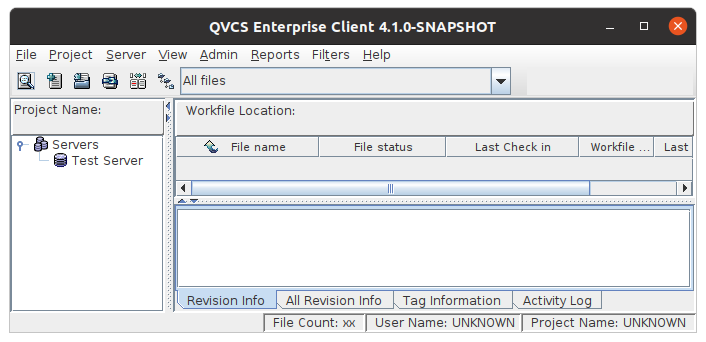

|
QVCSOS Enterprise -- Installation and Getting Started...Step 10: Launch the GUI client:For Linux or MacOS users, open a new shell window, and execute the client.sh shell script (you may need to chmod +x to make it executable). The client application should start up and display a login dialog. Select the server you defined earlier and enter your user name and password as you defined using the admin tool. You may find it handy to edit the client.sh file to put your user name into the command line to replace the ChangeToYourQvcsosUserName value. After entering a valid username/password, the main client window will display. You'll probably want to resize the main window, and some of the splitter bars to make things more usable.  On the left side of the screen, you'll see a list of servers known to this client; to the right is the file pane, which will show any files associated with the currently selected node on the left side of the screen. On the bottom right is a tabbed pane which will provide various version control information about any selected files. |
| For the source code, see https://github.com/jimv39/qvcsos |